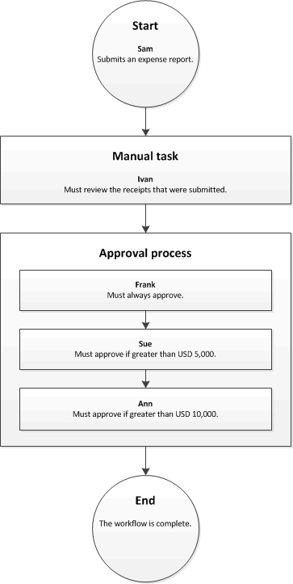

Workflowsystem – Übersicht
Important
Dynamics 365 for Finance and Operations hat sich zu speziell entwickelten Anwendungen entwickelt, mit denen Sie bestimmte Geschäftsfunktionen verwalten können. Weitere Informationen zu diesen Änderungen finden Sie im Dynamics 365-Lizenzierungshandbuch.
In diesem Thema wird das Workflowsystem beschrieben.
Was ist ein Arbeitsplan?
Der Begriff Workflow kann auf zwei Arten definiert werden: als System und als Geschäftsprozess.
Workflow als System
Der Workflow ist ein System, das auf dem Anwendungsobjektserver (AOS) ausgeführt wird. Das Workflowsystem verfügt über Funktionen, die zum Erstellen einzelner Workflows oder Geschäftsprozesse verwendet werden können.
Workflow als Geschäftsprozess
Ein Workflow stellt einen Geschäftsprozess dar. Ein Workflow definiert, wie ein Dokument das System durchläuft, indem angezeigt wird, wer eine Aufgabe abschließen, eine Entscheidung treffen oder ein Dokument genehmigen muss. Die folgende Abbildung zeigt z. B. einen Workflow für Spesenabrechnungen.

Beispiel zum besseren Verständnis dieses Workflows: Steffen reicht eine Spesenabrechnung in Höhe von 7.000 Euro ein. In diesem Szenario muss Joachim die Belege prüfen, die Steffen an ihn weiterleitet. Anschließend muss die Spesenabrechnung von Frank und Saskia genehmigt werden. Nehmen wir nun an, Steffen reicht eine Spesenabrechnung in Höhe von 11.000 Euro ein. In diesem Szenario muss Joachim die Belege prüfen, und Frank, Saskia und Anne müssen die Spesenabrechnung genehmigen.
Vorteile des Workflowsystems
Die Verwendung des Workflowsystems in der Organisation verspricht mehrere Vorteile:
- Konsistente Prozesse – Sie können die Verarbeitung bestimmter Dokumente definieren, z. B. von Bestellanforderungen und Spesenabrechnungen. Das Workflowsystem gewährleistet, dass Dokumente konsistent und effizient verarbeitet und genehmigt werden.
- Prozesssichtbarkeit – Sie können den Status, die Historie und die Leistungskennzahlen von Workflowinstanzen nachverfolgen. So können Sie besser feststellen, ob zur Effizienzsteigerung Änderungen am Workflow vorgenommen werden sollten.
- Zentralisierte Arbeitsliste – Benutzer können eine zentralisierte Arbeitsliste öffnen, um die ihnen zugeordneten Workflowaufgaben und -genehmigungen anzuzeigen.
Workflowinhalt
- Workflow-Systemarchitektur (This is an external link)
- Workflow-Elemente
- Aktivitäten in Workflow-Genehmigungsprozessen
- Erstellen von Workflows – Übersicht
- Konfigurieren von Workflow-Eigenschaften
- Manuelle Aufgaben in einem Workflow konfigurieren
- Konfigurieren von automatisierten Aufgaben in einem Workflow
- Genehmigungsprozesse in einem Workflow konfigurieren
- Genehmigungsschritte in einem Workflow konfigurieren
- Manuellen Entscheidungen in einem Workflow konfigurieren
- Konfigurieren von bedingten Entscheidungen in einem Workflow
- Konfigurieren paralleler Aktivitäten in einem Workflow
- Konfigurieren paralleler Verzweigungen in einem Workflow
- Konfigurieren von Positionsworkflows
- Workflow-FAQs